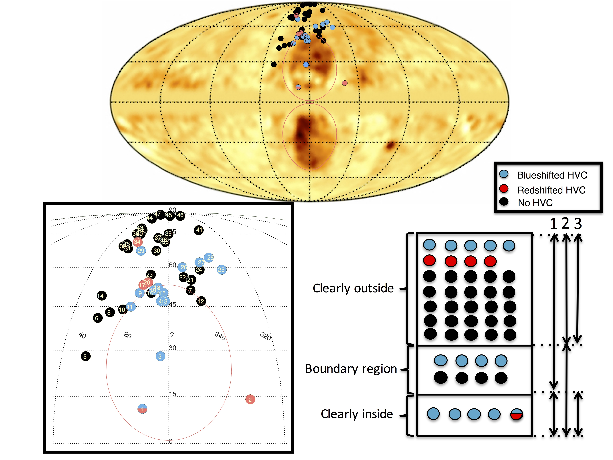

The Fermi Bubbles
The Fermi Bubbles are giant lobes of plasma extending above and below the Galactic Center. Using ultraviolet spectroscopy from the Hubble Space Telsecope, I study the kinematics of these
Bubbles, and constrain their kinematic age and the properties of the nuclear outflow from the Milky Way.
Some of my recent work on this field are listed below.
Mapping the Nuclear Outflow of the Milky Way: Studying the Kinematics and Spatial Extent of the Northern Fermi Bubble: :
Recent observations of gamma rays together with microwaves and polarized radio waves, have detected giant lobes of plasma (Fermi Bubbles) extending above and below the Galactic plane of the Milky Way.  These are possible signs of a Nuclear wind powered by either the central black hole or concentrated nuclear star-formation; but our understanding of their origin is hampered by a lack of kinematic information. In this work, we use ultraviolet spectra of 47 background QSOs and halo stars projected inside and outside the northern Fermi Bubble from the Hubble Space Telescope to study the incidence of high velocity absorption around it. We use five lines of sight inside the northern Fermi Bubble to constrain the velocity and column densities of outflowing gas traced by O I, Al II, C II, C IV, Si II, Si III, Si IV and other species. We find that all five lines of sight inside the northern Fermi Bubble exhibit blueshifted high velocity absorption components, whereas only 9 out of the 42 lines of sight outside the northern Fermi Bubble exhibit blueshifted high velocity absorption components. The observed outflow velocity profile decreases with Galactic latitude and radial distance (R) from the Galactic Center. The observed blueshifted velocities change from v_GSR = -265 km/s at R ~ 2.3 kpc to v_GSR = -91 km/s at R ~ 6.5 kpc. We derive the metallicity of the entrained gas along the 1H1613-097 sightline, one that passes through the center of the northern Fermi Bubble, finding [O/H] > -0.54 +\- 0.15. A simple kinematic model tuned to match the observed absorption component velocities along the five lines of sight inside the Bubble, constrains the outflow velocities to ~ 1000-1300 km/s, and the age of the outflow to be ~ 6-9 Myr. We estimate a minimum mass outflow rate for the nuclear outflow to be > 0.2 Solar mass/Year. Combining the age and mass outflow rates, we determine a minimum mass of total UV absorbing cool gas entrained in the Fermi Bubbles to be > a few million Solar masses. These observations illustrate the novel use of UV spectroscopy to constrain the feedback processes that regulate galaxy evolution. For more information see Bordoloi et al. 2017.
Probing the Fermi Bubbles in Ultraviolet Absorption: A Spectroscopic Signature of the Milky Way's Biconical Nuclear Outflow: :
Giant lobes of plasma extend ≈55° above and below the Galactic center, glowing in emission from gamma rays (the Fermi Bubbles) to microwaves and polarized radio waves. We use ultraviolet absorption-line spectra from the Hubble Space Telescope to constrain the velocity of the outflowing gas within these regions, targeting the quasar PDS 456 (l, b = 10.°4, +11.°2). This sightline passes through a clear biconical structure seen in hard X-ray and gamma-ray emission near the base of the northern Fermi Bubble. We report two high-velocity metal absorption components, at v LSR = -235 and +250 km/s, which cannot be explained by co-rotating gas in the Galactic disk or halo. Their velocities are suggestive of an origin on the front and back side of an expanding biconical outflow emanating from the Galactic center. We develop simple kinematic biconical outflow models that can explain the observed profiles with an outflow velocity of ~ 1000 km/s and a full opening angle of ≈110° (matching the X-ray bicone). The observations illustrate the use of UV spectroscopy to probe the properties of swept-up gas venting into the Fermi Bubbles. For more information see Fox et al. 2015.